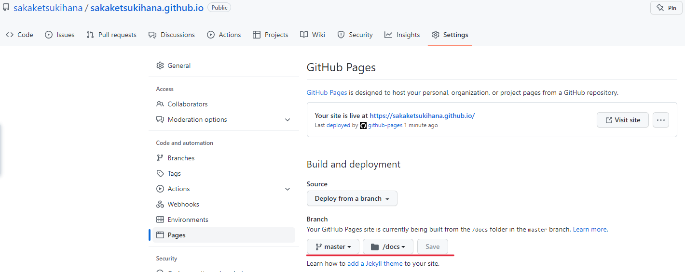
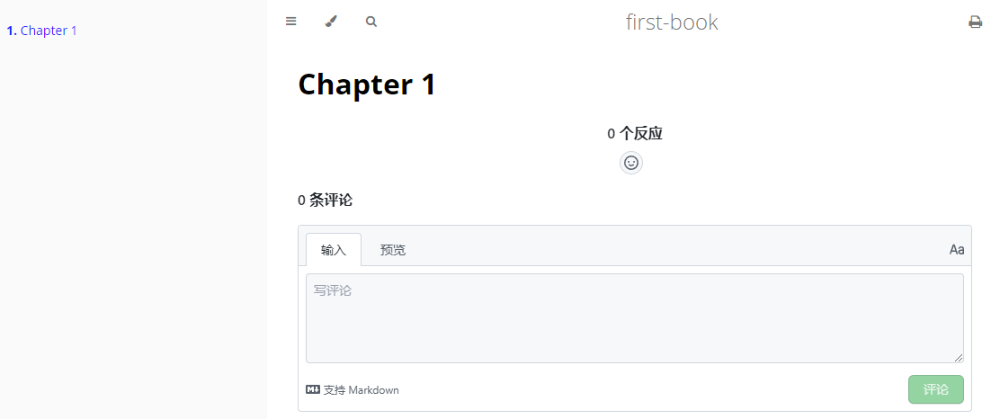

golang slice 增长公式
当切片容量不足时，会调用Go标准库 runtime.growslice 函数为切片扩容
这里只关注增长公式
第一步 确定容量
go 1.18 之前
func growslice(et *_type, old slice, cap int) slice {
......
newcap := old.cap
doublecap := newcap + newcap
if cap > doublecap {
newcap = cap
} else {
if old.cap < 1024 {
newcap = doublecap
} else {
// Check 0 < newcap 检测溢出并防止无限循环
for 0 < newcap && newcap < cap {
newcap += newcap / 4
}
if newcap <= 0 {
newcap = cap
}
}
}
......
}
在这里可以得出
若申请的容量为原来容量的两倍以上, 则直接确定新容量为申请的容量, 否则
在容量小于1024之前增长因子为2, 即容量翻倍
容量大于1024之后增长因子为1.25, 即容量增加25%, 直到大于申请的容量
go 1.18之后
func growslice(et *_type, old slice, cap int) slice {
......
newcap := old.cap
doublecap := newcap + newcap
if cap > doublecap {
newcap = cap
} else {
const threshold = 256
if old.cap < threshold {
newcap = doublecap
} else {
for 0 < newcap && newcap < cap {
newcap += (newcap + 3*threshold) / 4
}
if newcap <= 0 {
newcap = cap
}
}
}
......
}
阈值变小了, 为了让小切片到大切片的增长因子有平滑的过度进行了改进(commit)
在容量小于256之前增长因子为2, 即容量翻倍, 与之前相同
在容量大于256之后, 公式等于 新容量 = 旧容量 + (旧容量 + 3 * 256) / 4
等于 新容量 = 1.25 * 旧容量 + 192
因此当容量大于256时, 增长因子为1.25, 加上固定容量192
随着容量增长, 增长因子因此逐渐靠近1.25
starting cap growth factor
256 2.0
512 1.63
1024 1.44
2048 1.35
4096 1.30
第二步 内存对齐
代码紧接上一步
func growslice(et *_type, old slice, cap int) slice {
......
var overflow bool
var lenmem, newlenmem, capmem uintptr
switch {
case et.size == 1:
lenmem = uintptr(old.len)
newlenmem = uintptr(cap)
capmem = roundupsize(uintptr(newcap))
overflow = uintptr(newcap) > maxAlloc
newcap = int(capmem)
case et.size == goarch.PtrSize:
lenmem = uintptr(old.len) * goarch.PtrSize
newlenmem = uintptr(cap) * goarch.PtrSize
capmem = roundupsize(uintptr(newcap) * goarch.PtrSize)
overflow = uintptr(newcap) > maxAlloc/goarch.PtrSize
newcap = int(capmem / goarch.PtrSize)
case isPowerOfTwo(et.size):
var shift uintptr
if goarch.PtrSize == 8 {
shift = uintptr(sys.Ctz64(uint64(et.size))) & 63
} else {
shift = uintptr(sys.Ctz32(uint32(et.size))) & 31
}
lenmem = uintptr(old.len) << shift
newlenmem = uintptr(cap) << shift
capmem = roundupsize(uintptr(newcap) << shift)
overflow = uintptr(newcap) > (maxAlloc >> shift)
newcap = int(capmem >> shift)
default:
lenmem = uintptr(old.len) * et.size
newlenmem = uintptr(cap) * et.size
capmem, overflow = math.MulUintptr(et.size, uintptr(newcap))
capmem = roundupsize(capmem)
newcap = int(capmem / et.size)
}
......
}
由于本文主要关注增长相关问题, 所以这里忽略其他
这部分主要使用使用 roundupsize 函数处理内存对齐
最终可能导致newcap变大
示例
func main() {
// 运行于 go 1.19.2
s1 := []uint8{1, 2, 3}
fmt.Printf("s1 len:%d, cap: %d \n", len(s1), cap(s1))
// 3 + 4 大于两倍, 直接使用 7
// 内存对齐 8
s1 = append(s1, 4, 5, 6, 7)
fmt.Printf("s1 len:%d, cap: %d \n", len(s1), cap(s1))
s2 := make([]int, 256)
fmt.Printf("s2 len:%d, cap: %d \n", len(s2), cap(s2))
// 256 + (256 + 3 * 256) / 4
// = 512
s2 = append(s2, 1, 2, 3, 4)
fmt.Printf("s2 len:%d, cap: %d \n", len(s2), cap(s2))
}
输出
s1 len:3, cap: 3
s1 len:7, cap: 8
s2 len:256, cap: 256
s2 len:260, cap: 512
总结
由此可以看出所有决定容量的步骤
- 当申请容量大于当前容量两倍则直接使用申请容量
- 当容量小于容量阈值, 增长因子为2, 即容量翻倍
- go 1.18 之前, 当容量大于容量阈值, 增长因子为1.25, 即容量增加 25%, 直到满足申请容量
- go 1.18 和之后, 在容量增加 25% 之外还额外增加固定 192
- 进行内存对齐
容量阈值
go 1.18之前为1024
容量阈值go 1.18和之后为256, 编辑日期2022年11月7日
mdBook
mdBook是一个markdown文件文档生成工具, 将markdown文档转换为html格式
像Gitbook一样, 但用Rust实现
Hello World
获取mdBook, 从mdBook的Github页面下载即可
创建项目 mdbook init first-book
然后得到一个如下的文件结构
first-book
├── book.toml 项目配置文件
├─book 默认构建完的静态工程输出目录
└─src 存放md文档的目录
├── SUMMARY.md 项目导航侧边栏的定义文件(文件名不能更改)
└── chapter_1.md mdBook生成的示例文件
构建并通过默认浏览器打开 mdbook build first-book --open
或者通过启动服务的方式mdbook serve first-book --open
启动服务会监听文件变更重新构建html文件并实时反映到网页上
GitHub Pages
GitHub Pages是Github提供的一个网页寄存服务, 于2008年推出
可以用于存放静态网页, 包括博客、项目文件、甚至整本书1
Create a repository
既然是Github提供的服务, 那第一步就是需要创建一个仓库
创建一个名为username.github.io的public仓库
Hello World
git clone https://github.com/username/username.github.io
cd username.github.io
echo "Hello World" > index.html (linux 指令)
"Hello World" | Out-File index.html (windows powershell 指令)
git add --all
git commit -m "Hello World"
git push -u origin main
完成后使用浏览器打开https://username.github.io2
更改构建分支/文件夹

若想要更改构建的分支或者文件夹
通过Github仓库页面, 选择Settings
然后从左边导航栏中选中Pages
通过Branch修改, Save后启用
Giscus
由GitHub Discussions驱动的评论系统
获取Giscus配置
整合
为mdBook启用Giscus
假设使用的是
username.github.io来作为Giscus配置仓库
在first-boo目录下新增一个js文件
var giscus = function () {
const script = document.createElement("script");
script.type = "text/javascript";
script.src = "https://giscus.app/client.js";
script.setAttribute("data-repo", "username/username.github.io");
script.setAttribute("data-repo-id", "data-repo-id");
script.setAttribute("data-category", "data-category");
script.setAttribute("data-category-id", "data-category-id");
script.setAttribute("data-mapping", "title");
script.setAttribute("data-term", "0");
script.setAttribute("data-reactions-enabled", "1");
script.setAttribute("data-emit-metadata", "0");
script.setAttribute("data-input-position", "top");
script.setAttribute("data-theme", "preferred_color_scheme");
script.setAttribute("data-lang", "zh-CN");
script.setAttribute("data-loading", "lazy");
script.crossOrigin = "anonymous";
script.async = true;
document.getElementById("giscus-container").appendChild(script);
};
window.addEventListener('load', giscus);
下载mdBook的handlebars模板
cd username.github.io
mkdir theme
cd theme
wget https://raw.githubusercontent.com/rust-lang/mdBook/master/src/theme/index.hbs -o index.hbs
修改index.hbs模板
......
<main>
{{{ content }}}
<div id="giscus-container"></div> // 新增 giscus 元素
// 不能使用 giscus 作为ID, 不然会覆盖到自身本来的
</main>
......
修改book.toml增加指定加载新增的js文件, 假设js文件名为giscus
......
[output.html]
additional-js = ["giscus.js"]
......
最后构建静态文件并将文件提交到username.github.io仓库
mdbook build first-book
好了, 打开https://username.github.io

共用仓库
如果你想将md文件与静态文件放在同个仓库
可以这样修改book.toml的构建输出文件夹
......
[build]
build-dir = "docs"
......
并将Github Pages中构建的文件夹更改为docs